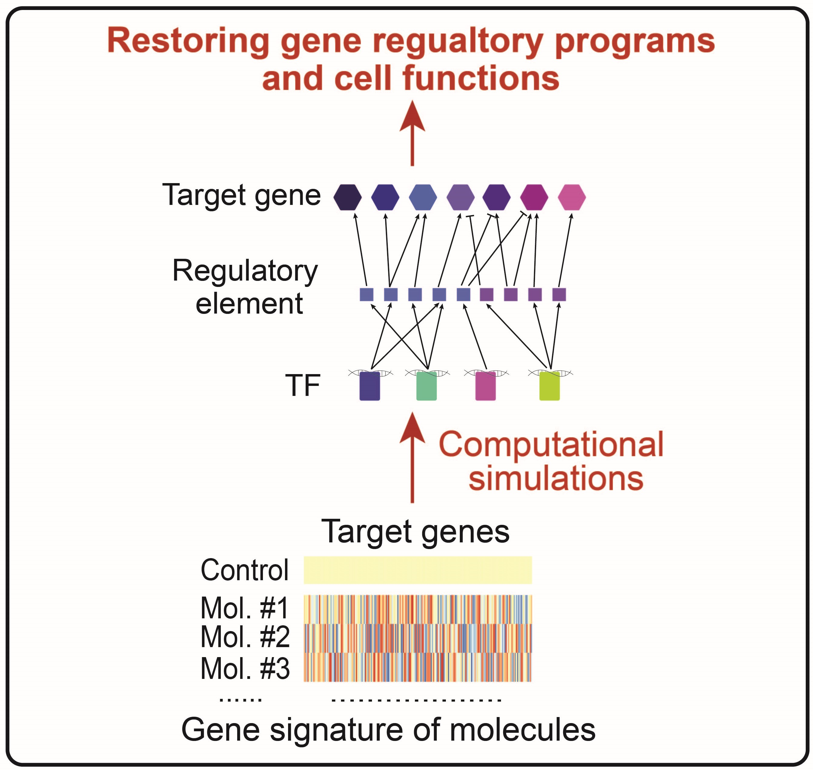

Wang Lab
Laboratory of Complex Disease and Quantitative Biology, IMB
Research Interests
A comprehensive and systemic understanding of the molecular principles and mechanisms governing cellular transformations in disease progression is essential to develop therapeutic strategies. However, the staggering complexity of intracellular molecules and interactions presents a formidable hurdle. In our laboratory, we address this complexity challenge by adopting an integrative approach that blends experimental, computational, and theoretical techniques. Through this multidisciplinary approach, we are better equipped to understand disease and develop more effective treatments.
Bridging cell functions and molecular profiles quantitatively

Dysfunction of cells is a hallmark of disease; we are interested in uncovering principles that bridge cell’s functions and molecular profiles. We experimentally quantify functions (such as cell proliferation, secretion, endocytosis, etc.) and molecular profiles (such as epigenome, transcriptome, proteome etc.) of cells across different disease states. Using these quantitative and comprehensive functional and molecular measurements, we identify molecular signatures that determine individual cell functions. This enables us to understand the molecular basis of cell dysfunctions.
Identifying mechanisms that underlie cellular changes in disease

To identify the molecular mechanisms that underlie cellular changes in diseases, we combine epigenomic, transcriptomic, and proteomic data from cells across different disease states to infer a gene regulatory network (GRN) that includes transcription factors (TFs), TF-binding regulatory elements, and target genes of TFs. The GRN facilitates the identification of regulatory programs driving cellular transformations in disease. We also explore how the GRN was encoded in the genome using a deep neural network. Together, the GRN and deep neural network enable the exploration of the dysregulation of cells in disease states.
Bridging cell functions and molecular profiles quantitatively

We borrow tools and concepts from dynamical systems to quantify and simulate the inferred GRN. By integrating it with a publicly available catalog of cellular transcriptomic signature perturbed with small-molecule compounds, we simulate the dynamics of GRN upon molecule perturbations. We use this computational platform to screen molecule combinations and predict those combinations that can change gene regulatory programs and restore cell functions. This enables us to prioritize molecule combinations as potential therapeutic interventions for complex diseases.